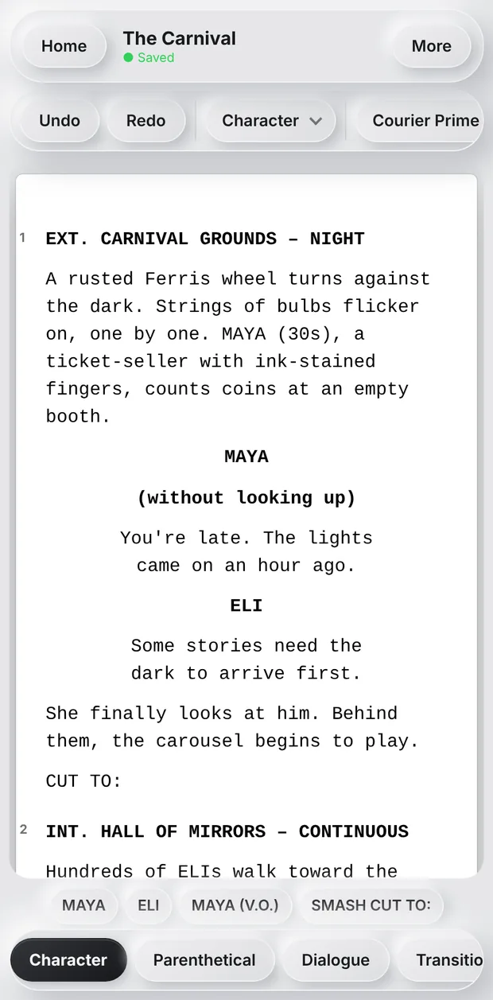
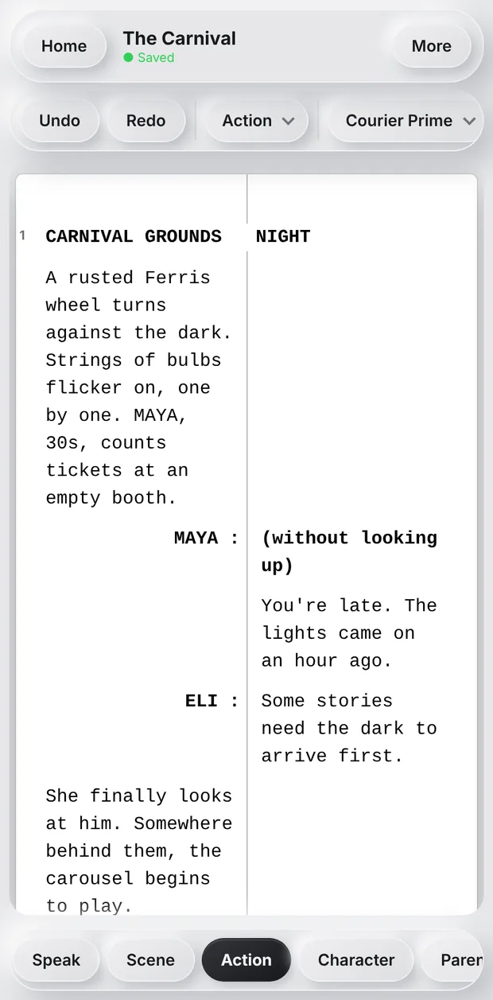
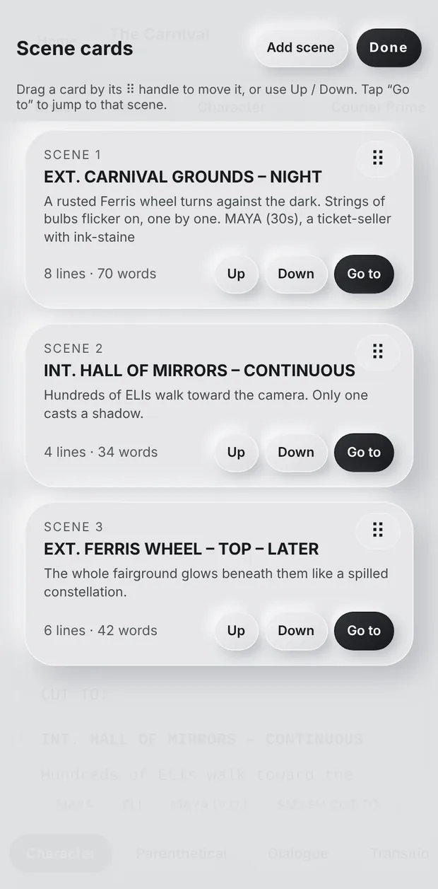
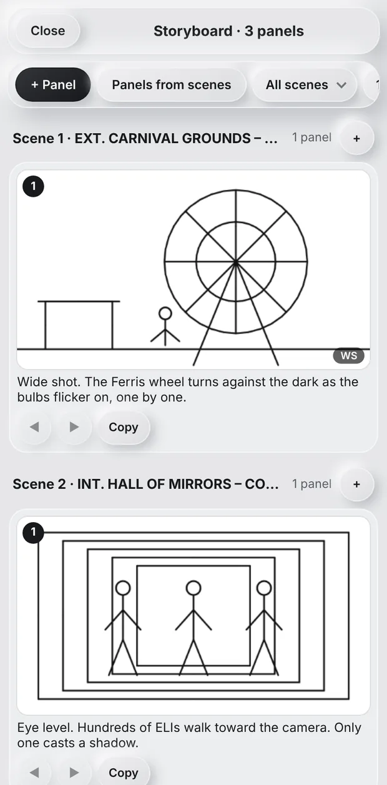
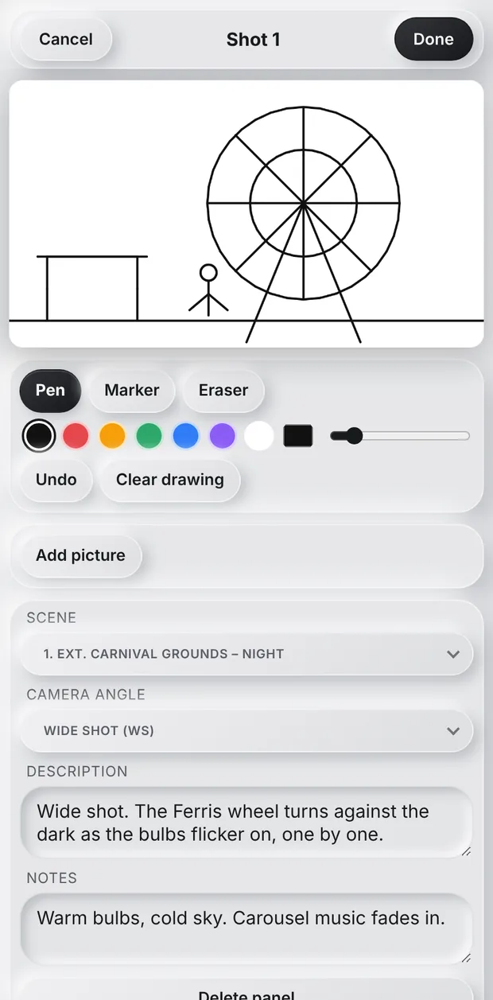
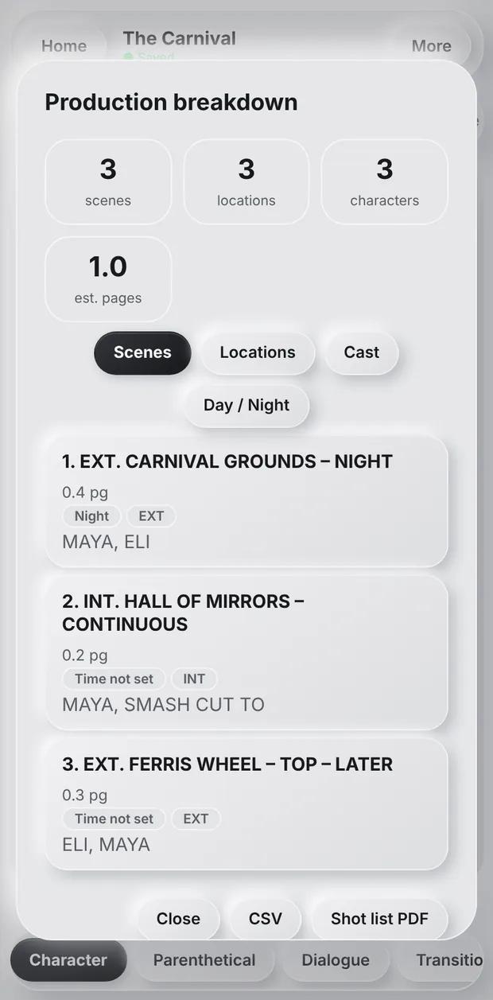
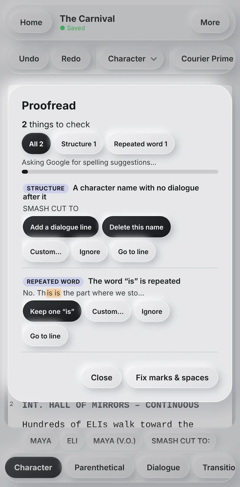
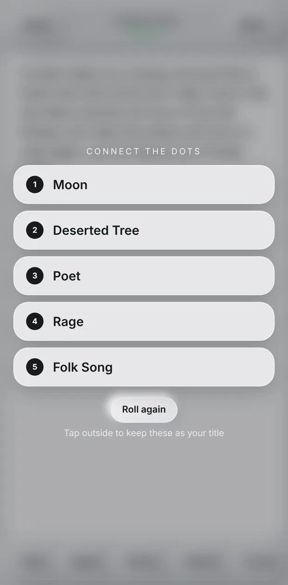
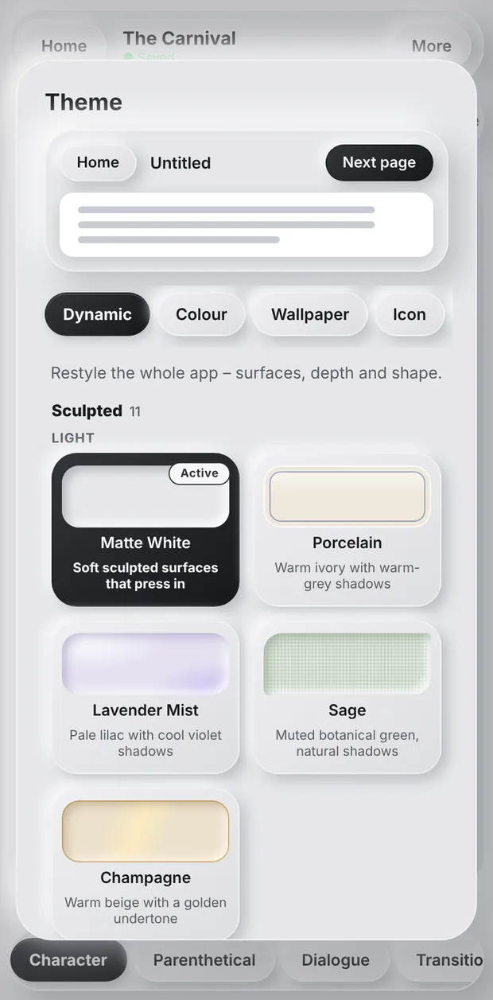
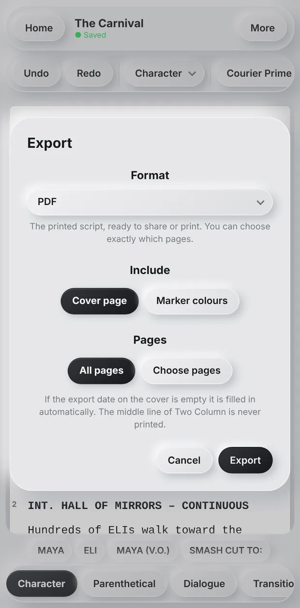

Industry-standard layouts
Standard screenplay and two-column layouts on A4, Letter, Legal, A5 or a custom page size, with a cover page editor and page-range printing.
Write, structure and polish your screenplay in industry-standard format. Translate entire scripts, plan every shot with storyboards and capture ideas in the Idea Vault, all in your pocket, with writing that works fully offline.
01 — Features
Standard screenplay and two-column layouts on A4, Letter, Legal, A5 or a custom page size, with a cover page editor and page-range printing.
Automatic scene numbers with sub-scenes such as 1A, custom numbers and locked numbers, carried into every export and breakdown.
Type in your own language, with phonetic typing for Hindi, Tamil, Malayalam and other regional Indian languages, and translate from more than 100 languages.
Turn an entire script into English, or another language, in one pass. Your original stays untouched and character names stay consistent throughout.
Plan every shot with a panel for each scene. Draw over reference pictures, label camera angles and export a storyboard PDF.
Capture ideas the moment they arrive. Story dice and a beat-sheet starter are there for when the page is blank.
Photograph printed pages and turn them into an editable script. Text recognition runs on your device and supports more than 30 languages.
Check spelling and consistency, then hear your script performed back to you with read-aloud and a distraction-free cinematic reading mode.
Export to PDF, Word, Final Draft, Fountain, EPUB, Excel, Markdown, CSV, Celtx and more. Import Final Draft, Fountain, PDF and plain-text scripts.
Choose from 27 themes, four corner styles and alternate app icons, with a Reduce Motion option for a lighter, smoother feel.
Haptic feedback, voice dictation, read-aloud and a thumb-friendly element bar, so you can write comfortably wherever you are.
Writing, saving and exporting all work without a connection. Scripts stay on your device, with automatic saving, version history, PIN lock and scheduled backups.
Industry standards
finnish follows the conventions of a professional screenplay, so your script looks right the moment you share it. Each line type has its own position on the page.
02 — Who it’s for
Whether it is a first draft or a final one, finnish keeps the page clear and the format right.
Write features, shorts and series in the format producers expect, then export to Final Draft or PDF when it is time to send.
Learn screenplay format by writing in it. The element bar keeps every line correctly formatted, so you can focus on the story.
Turn a script into a plan with storyboards, a scene breakdown, a shot list and a schedule.
Use the two-column layout for stage plays, audio dramas and audio-visual scripts.
Type phonetically in Hindi, Tamil, Malayalam and other Indian languages, then translate the whole script into English when you are ready.
Script videos, ads, podcasts and short-form series with the same tools professionals use.
03 — Studio tour
Real screens from the app, taken while writing a sample script.










04 — Look & feel
Choose from 27 themes. Drag the slider to preview five of them, from Matte White to Lavender Mist, on a phone and a foldable.
05 — Pricing
Try everything free for 5 days, then choose monthly or annual billing. One account and one price for every platform, set for your country.
finnish · Monthly
/ month
after your 5-day free trial
finnish · Annual
/ year
after your 5-day free trial
About the creator
I make films, I write in more languages than I can properly speak, and I got tired of screenwriting apps that wanted a tutorial, a subscription tour and a strong coffee before page one. So I built finnish: open it, write, and let the format take care of itself.
Nishan, creator of finnish
06 — Download
Available for Android and iOS.
Create an account and verify your email, and you get a 5-day free trial with full access to finnish. When it ends, a monthly or annual subscription keeps you writing. You can always open, read and export your existing scripts.
Yes. One account works on Android, iPhone, Windows and Mac, and one subscription covers all of them. You sign in once with an internet connection, and after that you can write offline.
finnish starts with a 5-day free trial, followed by a monthly or annual plan. The price is set by your country and is the same on every platform, so you always see a fair local price in the Pricing section.
Choose Download to open finnish in Safari, tap the Share button, then Add to Home Screen. It opens full screen and works offline. Android users can install the Android app.
Yes. The layout adapts to phones, foldables and tablets, so you can write on whichever screen suits the moment.
Yes. Where your device supports speech recognition, you can dictate straight onto the page, and finnish can read your script aloud.
Yes. You can cancel whenever you like in your store’s subscription settings and keep access until the end of the period you have already paid for.
Yes. Writing, formatting, saving and exporting all work offline. A few extras need a connection: creating your account and signing in (once), full-script translation, spelling suggestions in Proofread, and the first Scan to Script run, which downloads a language pack.
Yes. Your scripts are stored on your own device and can be protected with a PIN. We never receive or read them. Our servers hold only your account details. Scan to Script reads images on the device, so nothing is uploaded. If you choose to translate a script, its text is sent to a translation service for that request only.
PDF, Word (DOCX), Final Draft (FDX), Fountain, EPUB, Rich Text, OpenDocument, HTML, Markdown, plain text, CSV, Excel and Celtx, plus a ZIP of your whole project. The .finnish backup keeps everything, including storyboards and version history.
Yes. finnish imports Final Draft (FDX), Fountain, PDF, Word and plain-text files, and Scan to Script can turn photographed pages into an editable script.
Standard screenplay layout and two-column layout, on A4, US Letter, Legal, A5 or a custom page size. Scene numbers, including sub-scenes such as 1A, can be automatic, custom or locked.
You can write in more than 30 languages. For Hindi, Tamil, Telugu, Kannada, Malayalam and other regional Indian languages, you can type phonetically with English letters, and full-script translation supports more than 100 languages.
Yes. finnish saves your work automatically and keeps a version history, so you can compare and restore earlier drafts. You can also schedule backups.
No. finnish is built for privacy and offline writing, so scripts stay on the device where you write them. To move them, make a backup on one device and restore it on the other. You can save backups as a .finnish file, or to your own Google Drive.
Yes. Sign in with Google and choose Back up to Google Drive. The backup goes into a private folder that only finnish can open, and you can restore it on any device with your account.
Yes, at any time, inside the app: open Account & plan and choose Delete account. Scripts saved on your device are not touched.
Need more help? Open the Help Centre
Write in any of these, with phonetic typing for the Indian languages.
Share your script in whichever format the next person needs.
Everything you need to write works without a connection. A few extras need the internet.
* Your scripts always stay on your device. Only the extras above send or fetch anything online, and only when you use them.